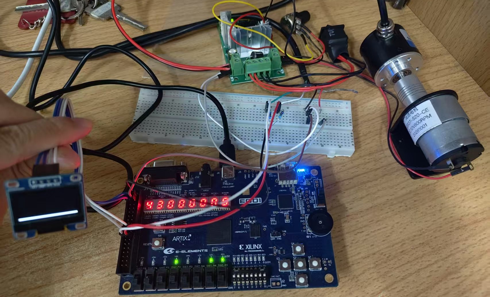

全国大学生嵌入式芯片与系统设计竞赛 · FPGA 创新设计赛道 · A 题
FPGA 运动编码器
在线状态监测系统
面向运动控制场景的高速编码器信号解析与在线状态预警
单片 Artix-7 全链路纯硬件实现 · 不控制、只旁听 · 让编码器链路的"隐性失效"当场现形
信 号 链 路
STEP 1
同步消抖
两级同步消除亚稳态，200 拍计数确认滤除毛刺
›
STEP 2
四倍频解码
A/B 四沿全计，分辨率 ×4，谁先跳变即判定转向
›
STEP 3
位置与测速
Z 相零位校准圈数，M 法测速 + 四点滑动平均
›
STEP 4
三类判别
超速 / 脉冲丢失 / 相位异常，锁存并声光报警
›
STEP 5
三路输出
数码管 + OLED 滚动波形 + UART 上传上位机
实 测 指 标
576
转 / 分
真机实测最高转速
（电机额定 600）
3054
帧 / 30 秒
连续上传校验和
全部正确，零丢帧
2.09
% LUT
资源占用极低
DSP 单元零消耗
25k
转 / 分 上限
扫频标定至崩溃点
低速下限 5 转/分
三 类 故 障 判 据
超速预警 转速越过在线可改阈值即报警并锁存，实测阈值改为 400 后于 287 转/分触发。
脉冲丢失 以 Z 相为零位基准，核对每圈计数是否等于额定线数 ×4；断线、接触不良立即现形。
相位异常 A/B 由相差四分之一周期退化为同相或反相时判定非法跳变。
解除武装式清报警 清除后若故障仍在会立刻重新置位，绝不掩盖真实故障。
作 品 实 物 照 片

整机实物：EGO1 主控 · OLED 转速波形 · 电机驱动 · JGB37-520 编码器电机
技 术 规 格
主控平台：EGO1 · Xilinx Artix-7 XC7A35T-1CSG324C
开发语言：纯 Verilog HDL（无软核 / 无 SDK / 无 MCU）
主时钟：100 MHz，时序收敛
上传接口：UART 115200 bps，11 字节定长帧
本地显示：8 位数码管 + SSD1306 OLED 128×64
验证体系：16 个模块 · 17 个测试台 · 板级整链仿真
被测对象：JGB37-520 减速电机 + 增量编码器
滤波效果：稳态转速 500 ± 5 转/分